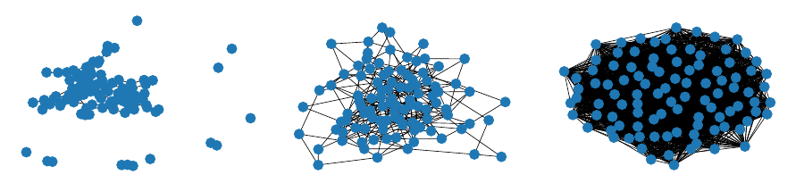

Théorie des graphes Cours 2 · L3 S5
Connexité et modèle d'Erdős–Rényi
Les graphes qui modélisent des réseaux sociaux ou des corpus de textes sont presque toujours connexes : on peut aller de n'importe quel sommet à n'importe quel autre. Ce chapitre définit les chemins et la connexité, la teste par des parcours en profondeur et en largeur, l'étend aux graphes orientés avec la forte connexité et l'algorithme de Tarjan, puis explique son apparition grâce à un modèle de graphe aléatoire, celui d'Erdős et Rényi.
Objectifs
- Définir un chemin, un graphe connexe, un sous-graphe induit et une composante connexe.
- Dérouler un parcours en profondeur (DFS) et un parcours en largeur (BFS), et s'en servir pour tester la connexité.
- Distinguer faible et forte connexité dans un graphe orienté, repérer circuits et composantes fortement connexes.
- Construire l'arbre de Trémaux d'un parcours en profondeur et comprendre l'idée de l'algorithme de Tarjan.
- Décrire le modèle \(G(n, p)\) d'Erdős–Rényi : nombre d'arêtes, loi du degré, degré moyen, seuil de connexité \(\ln(n)/n\).
Prérequis
- Cours 1 : graphes orientés ou non, voisinage, degré, liste d'adjacence.
- Probabilités : épreuve de Bernoulli, loi binomiale \(B(N, p)\), son espérance \(Np\), coefficient binomial \(C_N^k\).
- Algorithmique : récursivité, pile et file.
Complément À propos des sources
Cette page reprend le chapitre 2 du poly. Les notes de séance (Google Doc « Cours Graphes ») ne couvrent pour l'instant que le CM 1 : elles n'apportent rien ici. Les parcours, les composantes et le modèle d'Erdős–Rényi ont été recalculés avec NetworkX et de petits programmes Python, reproduits plus bas ; deux écarts avec le poly en sont ressortis, signalés par un badge « À vérifier » (l'algorithme de Tarjan tel qu'il est écrit, et la connexité « très certaine » pour \(p = 0{,}05\)).
Pourquoi étudier la connexité ? p. 16–17
Le chapitre 1 caractérisait les sommets un par un, par leur degré. On s'intéresse maintenant à la structure du graphe tout entier, et d'abord à une propriété observée presque partout : la connexité.
Les physicien·nes et mathématicien·nes ont très vite cherché à caractériser les graphes qui modélisent des systèmes réels. On observe par exemple que les graphes des réseaux sociaux sont presque systématiquement connexes : il est toujours possible de trouver une suite d'arêtes qui forme un chemin entre deux sommets quelconques. Cette propriété n'a rien d'évident : rien ne garantit, a priori, que deux personnes tirées au hasard dans un réseau social soient reliées par un tel chemin.
Le chapitre définit donc formellement les chemins et la connexité, décrit les algorithmes qui la testent (parcours en largeur, en profondeur, algorithme de Tarjan), puis l'étudie par un modèle, celui d'Erdős–Rényi, dont l'un des objectifs est de comprendre pourquoi et comment la connexité émerge dans les graphes du réel.
Remarque Un modèle des modèles p. 17
« In a series of seminal papers in the 1950s and 1960s, Paul Erdős and Alfred Rényi proposed and studied one of the earliest theoretical models of a network, the random graph. » Dans une série d'articles fondateurs des années 1950 et 1960, Paul Erdős et Alfred Rényi ont proposé et étudié l'un des premiers modèles théoriques de réseau, le graphe aléatoire. (M. E. J. Newman, Random graphs as models of networks, 2002)
Au chapitre 1, le graphe était un modèle d'un système réel. Ici, on monte d'un cran dans l'abstraction : le graphe aléatoire modélise les graphes qui modélisent le réel. C'est un méta-modèle, une version simplifiée et pratique à étudier de ces graphes.
Chemins et connexité p. 18–19
Pour dire que deux sommets sont reliés, il faut une suite d'arêtes qui s'enchaînent. C'est la notion de chemin, sur laquelle reposent toutes les définitions du chapitre.
Chemin p. 18
Définition 9 Chemin
Soit \(G = (V, E)\) (resp. \(G = (V, A)\)) un graphe non orienté (resp. orienté). Un chemin (path) de longueur \(k\) est une suite ordonnée d'arêtes (resp. d'arcs) \((e_1, \dots, e_k)\) telle que \(\forall i \in \{1, \dots, k\}\), \(e_i = (e_{i,s}, e_{i,c}) \in E\), et \(\forall i \in \{1, \dots, k-1\}\), \(e_{i,c} = e_{i+1,s}\). Le chemin connecte alors les sommets \(e_{1,s}\) et \(e_{k,c}\) avec les \(k\) arêtes.
Autrement dit, la cible (indice \(c\)) de chaque arête est la source (indice \(s\)) de la suivante. Dans le graphe de la figure 2.1, B et D sont connectés par le chemin de longueur 5 \(((B, A), (A, F), (F, E), (E, C), (C, D))\) et par le chemin de longueur 1 \(((B, D))\).
Pour savoir si deux sommets sont connectés, on cherche donc un chemin : une suite d'arêtes où le sommet cible de chacune est le sommet source de la suivante.
Ajout Dans un graphe non orienté, \((u, v) = (v, u)\) : on peut lire chaque arête dans le sens qui convient au chemin. Le poly parle aussi de chemin « de taille 5 » ; c'est la même chose que sa longueur, le nombre d'arêtes.
Graphe connexe p. 18
Définition 10 Graphe connexe
Un graphe \(G = (V, E)\) non orienté est connexe (connected) si, pour toute paire \((u, v) \in V \times V\), il existe un chemin constitué d'une suite d'arêtes de \(E\) qui connecte \(u\) à \(v\).
Le graphe de la figure 2.1 est connexe : il existe un chemin entre toutes les paires de sommets. Celui de la figure 2.2 ne l'est pas : aucun chemin ne relie C aux sommets A, B et E, et D n'est pas davantage connecté à A, B et E.
Sous-graphe induit et composante connexe p. 19
Dans la figure 2.2, les deux morceaux, \(\{C, D\}\) d'une part et \(\{A, B, E\}\) d'autre part, sont eux-mêmes connexes : ce sont les deux composantes connexes du graphe. Pour le dire précisément, il faut deux définitions.
Définition 11 Sous-graphe induit
Le sous-graphe \(G'\) de \(G\) induit par les sommets \(V' \subset V\) a pour ensemble d'arêtes \(E'\) les arêtes de \(E\) dont les deux extrémités sont des sommets de \(V'\) :
Définition 12 Composante connexe
Une composante connexe (connected component) d'un graphe \(G\) est un sous-graphe \(G'\) induit par \(V' \subset V\), connexe et maximal. Ce sous-graphe est maximal s'il n'existe aucun sous-ensemble \(V''\) tel que \(V' \subset V''\) et que le sous-graphe induit par \(V''\) soit connexe.
Si un graphe est connexe, il n'a qu'une seule composante connexe : lui-même. Pour savoir si un graphe est connexe, on utilise des algorithmes de parcours.
Attention Maximal ne veut pas dire le plus grand Ajout
Dans la figure 2.2, le sous-graphe induit par \(\{A, B\}\) est connexe, mais ce n'est pas une composante : on peut lui ajouter E sans perdre la connexité. En revanche, \(\{C, D\}\) est une composante, bien qu'elle soit plus petite que \(\{A, B, E\}\) : aucun sommet ne peut lui être ajouté. « Maximal » se juge par inclusion, pas par la taille.
Exercice 1 Composantes connexes Ajout
Un graphe a pour sommets \(\{1, \dots, 8\}\) et pour arêtes \((1, 2), (2, 3), (1, 3), (4, 5), (6, 7), (7, 8), (5, 4)\). Quelles sont ses composantes connexes ? Combien d'arêtes faut-il ajouter, au minimum, pour le rendre connexe ?
Indice
\((4, 5)\) et \((5, 4)\) sont la même arête. Une arête ajoutée entre deux composantes les fusionne.
Solution proposée
Trois composantes : \(\{1, 2, 3\}\), \(\{4, 5\}\) et \(\{6, 7, 8\}\). Chaque arête ajoutée diminue d'au plus un le nombre de composantes : il en faut au moins deux, et deux suffisent, par exemple \((3, 4)\) et \((5, 6)\). De façon générale, \(c\) composantes demandent \(c - 1\) arêtes.
Parcourir un graphe p. 19–20
Il existe deux manières de parcourir un graphe pour en explorer les sommets : en profondeur et en largeur. Partis d'un sommet, les deux parcours découvrent exactement sa composante connexe ; ils permettent donc tous deux de vérifier la connexité.
Parcours en profondeur (DFS) p. 19
Le parcours en profondeur (depth first search, DFS) part d'un sommet et s'enfonce aussi loin que possible avant de revenir en arrière.
# Prend en entrée un graphe et un sommet, et retourne la composante
# connexe dans laquelle se trouve ce sommet
procedure DFS(Graphe G, Sommet s, Ensemble E = {})
E = E ∪ {s}
for u ∈ N(s) do
if u ∉ E then
E = E ∪ DFS(G, u, E)
end if
end for
return E
end procedureParcours en largeur (BFS) p. 19–20
Le parcours en largeur (breadth first search, BFS) s'éloigne plus doucement du départ : il visite d'abord tous les voisins du sommet de départ, puis les voisins de ces voisins, et ainsi de suite. Il range les sommets à explorer dans une file : premier entré, premier sorti. L'appel initial est BFS(G, File("A"), {}).
# Prend en entrée un graphe et une file contenant le sommet de départ
# (puis les sommets à explorer), et retourne la composante connexe
# dans laquelle se trouve ce sommet
procedure BFS(Graphe G, File f, Ensemble E = {})
if f n'est pas vide then
Sommet s ← f.defiler()
E.add(s)
for u ∈ N(s) do
if u ∉ E then
f.enfiler(u)
end if
end for
return BFS(G, f, E)
else
return E
end if
end procedureLes deux parcours sur un exemple p. 19–20
On parcourt le graphe de la figure 2.3 depuis A. Un appel DFS(G, "A", {}) visite les sommets dans l'ordre A, B, C, D, E, F, G : on parle de parcours en profondeur parce qu'on explore B, C et D à la suite, en s'éloignant rapidement de A. Dans le parcours en largeur, on s'éloigne plus doucement de A, et l'on explore E juste après C : A, B, C, E, D, F, G.
À vérifier Le poly écrit « Prenons le graphe de l'Algorithme 1 et parcourons-le avec l'Algorithme 1 » : le graphe en question est celui de la figure 2.3, l'Algorithme 1 étant le DFS.
Complément Tester la connexité, en Python
On lance un parcours depuis un sommet quelconque : le graphe est connexe si et seulement si le parcours atteint les \(n\) sommets. Chaque sommet et chaque arête n'étant examinés qu'un nombre borné de fois, le test est rapide, de l'ordre de \(n + m\) opérations avec une liste d'adjacence. Le BFS s'écrit d'ordinaire avec une boucle plutôt qu'en récursif, et marque un sommet dès qu'il entre dans la file, pour ne pas l'y mettre deux fois :
from collections import deque
G = {"A": ["B"], "B": ["A", "C", "E"], "C": ["B", "D"], "D": ["C"],
"E": ["B", "F", "G"], "F": ["E"], "G": ["E"]}
def dfs(G, s, vus=None):
if vus is None:
vus = []
vus.append(s)
for u in G[s]:
if u not in vus:
dfs(G, u, vus)
return vus
def bfs(G, s):
vus, file = [s], deque([s])
while file:
v = file.popleft()
for u in G[v]:
if u not in vus:
vus.append(u)
file.append(u)
return vus
print("DFS :", dfs(G, "A"))
print("BFS :", bfs(G, "A"))
print("connexe :", len(dfs(G, "A")) == len(G))$ python parcours.py
DFS : ['A', 'B', 'C', 'D', 'E', 'F', 'G']
BFS : ['A', 'B', 'C', 'E', 'D', 'F', 'G']
connexe : TrueNetworkX fait de même avec nx.is_connected(G), nx.connected_components(G), nx.dfs_preorder_nodes(G, "A") et nx.bfs_tree(G, "A").
Remarque Le BFS du poly Ajout
Dans la version du poly, un sommet n'entre dans \(E\) qu'au moment où il sort de la file : s'il est voisin de deux sommets déjà défilés, il peut être enfilé deux fois. Le résultat reste juste (\(E\) est un ensemble), mais la file s'allonge inutilement. La version ci-dessus évite ce doublon.
Exercice 2 Dérouler les deux parcours Ajout
Dans le graphe de la figure 2.1, les voisins de chaque sommet sont examinés dans l'ordre alphabétique. Donner l'ordre de visite d'un DFS, puis d'un BFS, partis de A.
Indice
\(N(A) = \{B, F\}\), \(N(B) = \{A, D\}\), \(N(C) = \{D, E\}\), \(N(D) = \{B, C\}\), \(N(E) = \{C, F\}\), \(N(F) = \{A, E\}\).
Solution proposée
DFS : A, B, D, C, E, F. On descend A → B → D → C → E → F le long du cycle, sans jamais revenir en arrière avant la fin. BFS : A, puis ses voisins B et F, puis D (voisin de B) et E (voisin de F), enfin C : A, B, F, D, E, C. Les deux ordres ont été vérifiés avec NetworkX.
Faible et forte connexité p. 20–21
Dans un graphe orienté, un chemin doit suivre le sens des arcs. On peut aller de \(u\) à \(v\) sans pouvoir revenir. On distingue donc deux notions de connexité.
Définition 13 Faiblement connexe
Un graphe orienté \(G = (V, A)\) est faiblement connexe (weakly connected) si le graphe non orienté \(G_{\text{undirected}} = (V, E)\) correspondant à \(G\), obtenu en remplaçant les arcs de \(A\) par des arêtes non orientées \(E\), est connexe.
On oublie donc l'orientation des arcs, et l'on regarde s'il est possible de connecter toutes les paires de sommets par des chemins passant par les arêtes non orientées. La forte connexité, elle, tient compte de l'orientation.
Définitions 14 et 15 Fortement connectés, fortement connexe
Deux sommets \(u\) et \(v\) d'un graphe \(G = (V, A)\) sont fortement connectés s'il existe un chemin d'arcs de \(A\) qui va de \(u\) à \(v\), et un chemin de \(v\) à \(u\).
Un graphe orienté \(G = (V, A)\) est fortement connexe (strongly connected) si chaque paire de sommets \((u, v) \in V \times V\) est fortement connectée. \(V' \subset V\) est une composante fortement connexe (CFC) si le sous-graphe induit par \(V'\) est fortement connexe et qu'il n'existe aucun \(V'' \supset V'\) induisant un sous-graphe fortement connexe. Une CFC est donc un sous-graphe de taille maximale dont les sommets sont tous fortement connectés.
Proposition Transitivité
Si \(u\) et \(v\) sont fortement connectés, et que \(v\) et \(w\) le sont aussi, alors \(u\) et \(w\) sont également fortement connectés.
Preuve
Puisque \(u\) et \(v\) sont fortement connectés, il existe un chemin \(u L_1 v\) et un chemin \(v L_2 u\), où \(L_1\) et \(L_2\) sont des listes de sommets, éventuellement vides si \(u\) et \(v\) sont reliés directement par des arcs. De même, il existe \(L_3\) et \(L_4\) tels que \(v L_3 w\) et \(w L_4 v\). On obtient alors les chemins \(u L_1 v L_3 w\) et \(w L_4 v L_2 u\), qui connectent \(u\) à \(w\) et \(w\) à \(u\) : ils sont fortement connectés.
Pour détecter les composantes fortement connexes, il faut un algorithme plus compliqué que les parcours précédents. On peut savoir si un graphe est fortement connexe avec deux parcours en profondeur, l'un du graphe et l'autre de son transposé, où l'orientation de tous les arcs est inversée : c'est l'algorithme de Kosaraju. L'algorithme de Tarjan, présenté plus loin, s'exécute plus rapidement et est en général privilégié ; il liste très efficacement toutes les CFC d'un graphe. Avant d'y venir, il faut comprendre ce qu'est un circuit.
Complément Fort implique faible
Un graphe fortement connexe est faiblement connexe : un chemin orienté reste un chemin quand on oublie l'orientation. La réciproque est fausse : le graphe à deux arcs \(A \to B \to C\) est faiblement connexe, mais on ne peut pas aller de C à A. Il a trois CFC, \(\{A\}\), \(\{B\}\) et \(\{C\}\) : un sommet seul forme toujours une CFC, puisqu'il est fortement connecté à lui-même par le chemin vide.
Circuits et composantes fortement connexes p. 21–22
Intuitivement, deux sommets fortement connectés sont sur une même boucle : on va de l'un à l'autre, puis on revient. Cette boucle s'appelle un circuit.
Définition 16 Circuit
Un circuit (cycle) est un chemin dont les sommets de départ et de fin sont identiques. Un circuit est dit élémentaire s'il ne passe pas deux fois par le même sommet.
Dans le graphe de la figure 2.5, on dénombre :
- 3 circuits élémentaires : ABCA, ADA et EFGE ;
- 2 composantes fortement connexes : ABCD et EFG.
A et E ne sont pas fortement connectés : l'arc \((A, E)\) permet d'aller de A vers E, mais aucun chemin ne revient de E vers A. Le graphe est faiblement connexe, sans être fortement connexe.
Les notions de circuit et de CFC sont donc très liées. Les propositions suivantes formalisent ce lien.
Proposition D'une CFC à un circuit
Si les nœuds \(u\) et \(v\) font partie d'une même composante fortement connexe, alors ils font partie d'un même circuit, mais pas forcément d'un même circuit élémentaire.
Proposition D'un circuit à une CFC
Si \(u\) et \(v\) appartiennent à un même circuit, alors ils font partie de la même composante fortement connexe.
Le poly laisse ces deux preuves pour le TD (« À faire en TD »). L'exercice 3 les propose, avec une solution cachée.
Exercice 3 Circuits et CFC p. 21–22
Démontrer les deux propositions précédentes. Dans la figure 2.5, donner un circuit qui passe par B et D ; pourquoi n'est-il pas élémentaire ?
Indice
Mettre bout à bout un chemin de \(u\) à \(v\) et un chemin de \(v\) à \(u\). Dans l'autre sens, découper le circuit en deux morceaux à l'endroit où il passe par \(v\).
Solution proposée
Si \(u\) et \(v\) sont dans une même CFC, ils sont fortement connectés : il existe un chemin \(u L_1 v\) et un chemin \(v L_2 u\). Leur concaténation \(u L_1 v L_2 u\) est un chemin qui part de \(u\) et y revient, donc un circuit qui passe par \(v\). Il peut repasser deux fois par un même sommet, s'il est commun à \(L_1\) et \(L_2\) : il n'est pas forcément élémentaire.
Si \(u\) et \(v\) sont sur un même circuit, on suit le circuit depuis \(u\) jusqu'à \(v\), ce qui donne un chemin de \(u\) à \(v\), puis de \(v\) jusqu'au retour en \(u\), ce qui donne un chemin de \(v\) à \(u\). Ils sont fortement connectés, donc dans la même CFC (par transitivité, tous les sommets fortement connectés à \(u\) sont dans la sienne).
Dans la figure 2.5, B, C, A, D, A, B est un circuit qui passe par B et D : il passe deux fois par A, donc il n'est pas élémentaire. Aucun circuit élémentaire ne contient à la fois B et D, puisque tout chemin de l'un à l'autre passe par A.
La proposition suivante éclaire la composition d'une CFC.
Proposition Les chemins restent dans la CFC
Soit deux sommets \(u\) et \(v\) d'une même composante fortement connexe. Alors tous les sommets des chemins qui mènent de \(u\) à \(v\) appartiennent aussi à cette composante.
Preuve
Soit \(w\) un sommet d'un chemin de \(u\) à \(v\). La fin de ce chemin va de \(w\) à \(v\). Comme \(u\) et \(v\) sont dans la même CFC, il existe un chemin de \(v\) à \(u\), et le début du chemin initial va de \(u\) à \(w\) : il existe donc un chemin de \(v\) à \(w\). Ainsi \(v\) et \(w\) sont fortement connectés, et \(w\) est dans la composante de \(v\) par transitivité.
Arbre de Trémaux et algorithme de Tarjan p. 22–23
L'algorithme de Tarjan repose sur un parcours en profondeur, et sur l'arbre que ce parcours dessine. On commence par cet arbre et son vocabulaire.
L'arbre de Trémaux p. 22–23
L'arborescence construite lors d'un parcours en profondeur s'appelle l'arbre de Trémaux. Sa numérotation de Trémaux donne à chaque sommet un rang : sa position dans l'ordre du parcours. Sur le graphe de la figure 2.5, supposons le parcours en profondeur suivant, depuis A :
- on explore d'abord D par l'arc \((A, D)\) ;
- D ne permet pas d'aller plus loin (son seul voisin sortant, A, est déjà visité) : on revient en arrière (backtrack) vers A, on explore E par l'arc \((A, E)\), puis on continue en profondeur avec \((E, F)\) et \((F, G)\) ;
- G ne permet pas d'aller plus loin : on revient vers F, puis, pour la même raison, vers E et vers A ;
- on explore B par l'arc \((A, B)\), puis C par \((B, C)\).
Un peu de vocabulaire sur ces arbres :
- Racine
- le sommet de départ du parcours, ici A1.
- Hauteur \(H(u)\)
- la distance de \(u\) à la racine : \(H(D) = 1\), \(H(G) = 3\), \(H(C) = 2\).
- Adjacents
- deux sommets reliés par une arête de l'arbre : A et D, F et G, A et B…
- Enfant, parent
- \(u\) est l'enfant de \(v\), son parent, s'ils sont adjacents et que \(H(u) = H(v) + 1\) : D est l'enfant de A, F est le parent de G.
- Descendant, ancêtre
- \(u\) descend de \(v\), son ancêtre, s'il existe un chemin de parents à enfants qui mène de \(v\) à \(u\) : B et C descendent de A ; G descend de A, de E et de F.
À vérifier Le poly écrit « s'il existe un chemin de parents-enfants menant de \(u\) à \(v\) » pour \(u\) descendant de \(v\) : en descendant de parent en enfant, ce chemin va de l'ancêtre \(v\) au descendant \(u\).
L'idée de l'algorithme de Tarjan p. 23
Question 2 du poly : à quoi l'arbre de Trémaux et sa numérotation servent-ils pour détecter les CFC ? L'algorithme de Tarjan définit la racine d'une CFC comme son sommet de plus petit numéro de Trémaux, et repose sur l'idée suivante.
Proposition Les CFC dans l'arbre de Trémaux
Tous les sommets d'une CFC sont des descendants de la racine de cette CFC dans l'arbre de Trémaux, et un descendant n'est dans la même CFC que s'il existe un chemin de lui vers cette racine.
L'algorithme calcule donc, pour chaque sommet, un attribut : le plus petit numéro de Trémaux auquel le sommet, ou l'un de ses descendants, donne accès dans le graphe. Dans la figure 2.6, C porte le numéro 7 ; mais, dans le graphe de la figure 2.5, C a un arc vers A : il a accès au sommet de numéro 1.
procedure Tarjan(Graphe G)
global Ensemble P ← {}
global i = 0
for u ∈ V do
if u ∉ P then
Tarjan_rec(u)
end if
end for
procedure Tarjan_rec(s)
P.add(s)
s.min_no_acces = i
i++
for u ∈ N(s) do
if u ∉ P then
Tarjan_rec(u)
s.min_no_acces = min(s.min_no_acces, u.min_no_acces)
else
s.min_no_acces = min(s.min_no_acces, u.min_no_acces)
end if
end for
end procedure
end procedureIci, \(N(s)\) désigne les voisins sortants \(N^+(s)\), et la numérotation commence à 0 au lieu de 1. Sur la figure 2.5, avec le parcours de la figure 2.6, on obtient :
| Sommet | A | D | E | F | G | B | C |
|---|---|---|---|---|---|---|---|
| Numéro | 0 | 1 | 2 | 3 | 4 | 5 | 6 |
min_no_acces | 0 | 0 | 2 | 2 | 2 | 0 | 0 |
Les sommets de même attribut forment une CFC : \(\{A, D, B, C\}\), de racine A (numéro 0), et \(\{E, F, G\}\), de racine E (numéro 2). Une racine se reconnaît à ce que son attribut est égal à son propre numéro.
À vérifier Tel qu'il est écrit, l'algorithme ne marche pas toujours : dans la branche else, il prend l'attribut de tout voisin déjà visité, y compris d'un voisin dont la CFC est déjà terminée. Avec les arcs \(a \to b\) et \(c \to b\), parcourus depuis \(a\) puis depuis \(c\), on obtient \(a : 0\), \(b : 1\) et \(c : 1\) : \(c\) prend l'attribut de \(b\), alors que \(\{b\}\) et \(\{c\}\) sont deux CFC distinctes. L'algorithme complet ne tient compte d'un voisin déjà visité que s'il est encore dans une pile des sommets en cours, et prend alors son numéro ; il dépile une CFC chaque fois qu'il termine une racine (complément ci-dessous). Sur la figure 2.5, les deux versions donnent le même résultat. Le commentaire du poly, « retourne la composante connexe », est aussi repris par erreur du DFS : l'algorithme ne retourne rien, il annote les sommets. À confirmer en TD.
Complément L'algorithme de Tarjan complet, en Python
Chaque sommet reçoit un numéro (num, l'ordre du DFS) et un attribut (acces, le min_no_acces du poly). Les sommets visités sont empilés ; quand un sommet termine avec acces == num, c'est une racine, et l'on dépile jusqu'à lui : c'est sa CFC.
def tarjan(G):
num, acces, pile, dans_pile, cfc = {}, {}, [], set(), []
i = 0
def visiter(s):
nonlocal i
num[s] = acces[s] = i
i += 1
pile.append(s)
dans_pile.add(s)
for u in G[s]:
if u not in num: # u pas encore visité
visiter(u)
acces[s] = min(acces[s], acces[u])
elif u in dans_pile: # u visité, CFC pas encore close
acces[s] = min(acces[s], num[u])
if acces[s] == num[s]: # s est la racine d'une CFC
composante = []
while True:
u = pile.pop()
dans_pile.discard(u)
composante.append(u)
if u == s:
break
cfc.append(composante)
for s in G:
if s not in num:
visiter(s)
return cfc
G = {"A": ["D", "E", "B"], "B": ["C"], "C": ["A"], "D": ["A"],
"E": ["F"], "F": ["G"], "G": ["E"]}
print(tarjan(G))
print(tarjan({"a": ["b"], "b": [], "c": ["b"]}))$ python tarjan.py
[['G', 'F', 'E'], ['C', 'B', 'D', 'A']]
[['b'], ['a'], ['c']]Chaque sommet est empilé et dépilé une fois, chaque arc examiné une fois : l'algorithme fait un seul parcours, de l'ordre de \(n + m\) opérations, là où Kosaraju en fait deux. Avec NetworkX : nx.strongly_connected_components(G), nx.is_strongly_connected(G) et nx.is_weakly_connected(G).
Exercice 4 Composantes fortement connexes Ajout
Soit le graphe orienté d'arcs \(1 \to 2\), \(2 \to 3\), \(3 \to 1\), \(3 \to 4\), \(4 \to 5\), \(5 \to 6\), \(6 \to 4\), \(6 \to 7\). Est-il faiblement connexe ? fortement connexe ? Donner ses CFC, puis son arbre de Trémaux depuis 1, les voisins étant pris dans l'ordre croissant.
Indice
Chercher les circuits : chacun est contenu dans une CFC. Un sommet qui n'est sur aucun circuit forme une CFC à lui seul.
Solution proposée
Le graphe est faiblement connexe (sans les orientations, tout est relié), mais pas fortement : rien ne revient de 4 vers 1. Trois CFC : \(\{1, 2, 3\}\) (circuit 1231), \(\{4, 5, 6\}\) (circuit 4564) et \(\{7\}\). Le DFS depuis 1 visite 1, 2, 3, 4, 5, 6, 7 : l'arbre de Trémaux est la chaîne 1 → 2 → 3 → 4 → 5 → 6 → 7, de numéros 1 à 7. Les racines des CFC sont 1, 4 et 7, leurs plus petits numéros. NetworkX donne les mêmes composantes.
Le modèle d'Erdős–Rényi p. 24–27
Les graphes qui modélisent un corpus via les co-occurrences de mots sont en général connexes, comme ceux des amitiés sur les réseaux sociaux en ligne. Comment expliquer cette propriété ? Le modèle d'Erdős–Rényi (ER) modélise ces graphes eux-mêmes, pour mieux comprendre à quoi ressemblent les graphes issus de données réelles, et pourquoi la connexité y émerge.
Le modèle G(n, p) p. 24
C'est un modèle de graphe non orienté, à deux paramètres. Dans un graphe à \(n\) sommets, on a au minimum 0 arête, et le graphe est complètement déconnecté, formé de \(n\) composantes connexes de taille 1 ; on a au maximum \(\frac{n(n-1)}{2}\) arêtes, et le graphe est complet : chaque sommet est relié à tous les autres. Le modèle tire chacune de ces arêtes au hasard, indépendamment des autres.
Définition Modèle d'Erdős–Rényi
Le graphe aléatoire \(G(n, p)\) (random graph) a deux paramètres :
- \(n\), le nombre de sommets ;
- \(p\), la probabilité pour chacune des \(\frac{n(n-1)}{2}\) arêtes possibles d'exister, indépendamment des autres.

Le graphe de gauche n'est pas connexe : un parcours en largeur ou en profondeur lancé depuis n'importe quel sommet ne les découvrirait pas tous. Il a même des sommets isolés, de degré 0, donc des composantes de taille 1. Avec \(p = 0{,}05\), le graphe est connexe. Avec \(p = 0{,}5\), il devient difficile de distinguer les arêtes tant il y en a.
Le nombre d'arêtes p. 24
Chaque paire de sommets est une arête avec la probabilité \(p\) : c'est une épreuve de Bernoulli, de succès \(p\) et d'échec \(1 - p\). On répète ce tirage \(\frac{n(n-1)}{2}\) fois, de façon indépendante : le nombre d'arêtes suit donc une loi binomiale \(B\!\left(\frac{n(n-1)}{2}, p\right)\), dont l'espérance donne le nombre moyen d'arêtes :
Exemple n = 100
Avec \(n = 100\), on a au plus \(\frac{100 \times 99}{2} = 4950\) arêtes. Pour \(p = 0{,}5\), l'espérance vaut 2475 ; le graphe de la figure 2.7 en compte 2430. Ajout Pour \(p = 0{,}02\) et \(p = 0{,}05\), l'espérance vaut 99 et 247,5 : les « environ 100 » et « environ 270 » arêtes de la figure sont des tirages autour de ces valeurs.
La loi du degré p. 25
Question 3 du poly : quelle est la probabilité pour un sommet tiré au hasard d'avoir un degré \(k\) ? Pour qu'un sommet \(u\) soit de degré \(k\), il faut :
- qu'il soit connecté à \(k\) sommets par \(k\) arêtes ;
- qu'il ne soit pas connecté aux \(n - k - 1\) autres sommets : ces arêtes-là n'existent pas.
Le degré de \(u\) est le nombre de succès parmi les \(n - 1\) arêtes dont il peut être l'extrémité (il peut se connecter aux \(n - 1\) autres sommets) : c'est une variable aléatoire de loi binomiale \(B(n - 1, p)\).
Propriété Degré dans G(n, p)
Les \(k\) voisins sont choisis parmi les \(n - 1\) autres sommets, d'où \(C_{n-1}^k\) ; \(p^k\) modélise les \(k\) succès, les \(k\) arêtes présentes ; \((1-p)^{n-k-1}\) modélise les échecs, les \(n - k - 1\) arêtes absentes. Le degré moyen vaut environ \((n - 1) \cdot p\).
Les probabilités permettent donc d'estimer la distribution des degrés et le degré moyen. Pour les graphes de la figure 2.7, la fonction de masse de la loi binomiale donne la distribution estimée du degré : en abscisse le degré, en ordonnée la probabilité qu'un sommet tiré au hasard ait ce degré, c'est-à-dire aussi la part estimée des sommets de ce degré.
Quand \(p = 0{,}02\), on estime à plus de 25 % les sommets de degré 1, et de même pour ceux de degré 2 (27,3 % chacun). On estime aussi qu'entre 10 et 15 % des sommets n'ont aucun voisin (13,5 %) : le graphe ne peut pas être connexe. Quand \(p = 0{,}5\), environ 8 % des sommets sont de degré 50.
Complément Calculer une probabilité de degré
Pour \(n = 100\) et \(p = 0{,}02\) : \(P(d(u) = 0) = 0{,}98^{99} \approx 0{,}135\), et \(P(d(u) = 1) = 99 \times 0{,}02 \times 0{,}98^{98} \approx 0{,}273\). On attend donc environ 13 sommets isolés sur 100. En Python, math.comb(99, k) * p**k * (1 - p)**(99 - k) calcule chaque barre de la figure.
Connexe ou pas connexe ? p. 25–27
La connexité, le fait qu'il n'existe qu'une composante connexe, de taille \(n\), dépend bien sûr de \(n\) et de \(p\). Plus \(p\) est grand, plus il y a d'arêtes, et plus le graphe a de chances d'être connexe. Mais le \(p\) nécessaire change avec \(n\) : un graphe de 3 sommets a besoin de deux arêtes sur les trois possibles pour être connexe, et avec \(p = 0{,}05\), on a de bonnes chances de n'en tirer aucune.
Propriété Seuil de connexité d'Erdős–Rényi
- Le graphe est en général connexe dès qu'il n'a plus aucun sommet de degré 0.
- Quand \(p \lt \dfrac{\ln(n)}{n}\), le graphe contient très certainement des sommets isolés : il n'est pas connexe.
- Quand \(p \gt \dfrac{\ln(n)}{n}\), le graphe est très certainement connexe.
Pour \(n = 100\), \(\frac{\ln(n)}{n} = 0{,}046\) : avec \(p = 0{,}05\), on avait toutes les chances d'obtenir un graphe connexe, mais pas avec \(p = 0{,}02\).
La fonction \(\ln(n)/n\) décroît vers 0 : plus le graphe est grand, plus \(p\) peut être faible tout en conservant la connexité. C'est ce qui explique que dans les grands graphes du réel (plusieurs centaines de millions d'utilisateurs de Twitter, des dizaines voire des centaines de milliers de mots dans les grands corpus), la probabilité que deux sommets soient reliés est très faible, et que l'on observe pourtant des graphes connexes.
À vérifier « Très certainement » est à prendre au sens asymptotique : le seuil devient net quand \(n\) est très grand. Pour \(n = 100\), \(p = 0{,}05\) est encore très proche du seuil, et une simulation de 1000 graphes (ci-dessous) n'en trouve qu'un peu plus de la moitié connexes. Le graphe connexe de la figure 2.7 est donc un tirage favorable, pas une quasi-certitude.
Complément Simuler le seuil avec NetworkX
import networkx as nx
n, essais = 100, 1000
for p in (0.02, 0.03, 0.046, 0.05, 0.07):
connexes = sum(nx.is_connected(nx.gnp_random_graph(n, p, seed=s))
for s in range(essais))
print(f"p = {p:<5} : {connexes / essais:.0%} de graphes connexes")$ python er.py
p = 0.02 : 0% de graphes connexes
p = 0.03 : 1% de graphes connexes
p = 0.046 : 38% de graphes connexes
p = 0.05 : 54% de graphes connexes
p = 0.07 : 93% de graphes connexesLa proportion de graphes connexes bascule de presque 0 à presque 1 autour de \(\ln(n)/n\). Une estimation classique l'explique : le nombre moyen de sommets isolés vaut \(n(1-p)^{n-1} \approx n e^{-pn}\), soit environ 0,7 pour \(p = 0{,}05\) ; tant qu'il n'est pas très petit devant 1, la connexité reste incertaine. Avec \(n\) plus grand, la bascule se resserre autour du seuil. Hors programme
Exercice 5 Un graphe aléatoire de 1000 sommets Ajout
On tire un graphe \(G(1000, 0{,}01)\). Donner le nombre moyen d'arêtes, le degré moyen et la probabilité qu'un sommet soit isolé. Le graphe est-il vraisemblablement connexe ?
Indice
Comparer \(p\) à \(\ln(1000)/1000\).
Solution proposée
\(\mathbb{E}(m) = \frac{1000 \times 999}{2} \times 0{,}01 = 4995\) arêtes ; degré moyen \(999 \times 0{,}01 = 9{,}99\). Un sommet est isolé avec la probabilité \(0{,}99^{999} \approx 4{,}4 \times 10^{-5}\), soit environ 0,04 sommet isolé en moyenne. Comme \(p = 0{,}01 \gt \ln(1000)/1000 \approx 0{,}0069\), le graphe est très vraisemblablement connexe.
À retenir
L'essentiel
- Un chemin de longueur \(k\) est une suite de \(k\) arêtes (ou arcs) où la cible de chacune est la source de la suivante.
- Un graphe non orienté est connexe si un chemin relie toute paire de sommets ; ses composantes connexes sont ses sous-graphes induits connexes et maximaux (au sens de l'inclusion).
- Un parcours en profondeur (DFS, récursif ou avec une pile) ou en largeur (BFS, avec une file) depuis un sommet découvre sa composante : le graphe est connexe si le parcours atteint les \(n\) sommets.
- Graphe orienté : faiblement connexe si le graphe sans orientation est connexe ; fortement connexe si, pour tout \(u\) et \(v\), il existe un chemin de \(u\) à \(v\) et un de \(v\) à \(u\). La forte connexité est transitive.
- Deux sommets sont dans la même composante fortement connexe si et seulement s'ils sont sur un même circuit.
- L'arbre de Trémaux est l'arbre d'un DFS, numéroté dans l'ordre de visite ; l'algorithme de Tarjan y repère la racine de chaque CFC, son sommet de plus petit numéro, en calculant le plus petit numéro accessible depuis chaque sommet.
- Modèle d'Erdős–Rényi \(G(n, p)\) : chaque arête existe avec la probabilité \(p\). Nombre d'arêtes \(\sim B\!\left(\frac{n(n-1)}{2}, p\right)\), degré \(\sim B(n-1, p)\), degré moyen \((n-1)p\).
- Seuil de connexité : le graphe est presque sûrement non connexe si \(p \lt \ln(n)/n\), connexe si \(p \gt \ln(n)/n\) ; ce seuil tend vers 0 quand \(n\) grandit, d'où la connexité des grands graphes réels.
Auto-évaluation
Un graphe a 3 composantes connexes. Combien d'arêtes faut-il ajouter, au minimum, pour le rendre connexe ?
Deux : chaque arête ajoutée fusionne au plus deux composantes.
Quelle structure de données distingue un BFS d'un DFS ?
Le BFS range les sommets à explorer dans une file (premier entré, premier sorti) ; le DFS dans une pile, explicite ou celle des appels récursifs.
Le graphe \(A \to B\), \(B \to C\), \(C \to B\) est-il fortement connexe ? Quelles sont ses CFC ?
Non : rien ne revient vers A. Il est faiblement connexe, et a deux CFC : \(\{A\}\) et \(\{B, C\}\).
Qu'est-ce que la racine d'une CFC pour l'algorithme de Tarjan ?
Son sommet de plus petit numéro dans l'arbre de Trémaux, c'est-à-dire le premier visité par le DFS ; tous les autres sommets de la CFC en descendent.
Pourquoi le degré d'un sommet de \(G(n, p)\) suit-il une loi \(B(n-1, p)\) ?
Le sommet peut être relié à \(n - 1\) autres sommets, et chacune de ces arêtes existe avec la probabilité \(p\), indépendamment des autres : son degré compte les succès de \(n - 1\) épreuves de Bernoulli.
Degré moyen d'un graphe \(G(101, 0{,}1)\) ?
\((n - 1) p = 100 \times 0{,}1 = 10\).
Pourquoi un très grand réseau social peut-il être connexe alors que chaque personne n'en connaît qu'une infime partie ?
Le seuil de connexité \(\ln(n)/n\) tend vers 0 quand \(n\) grandit : plus le graphe est grand, plus la probabilité de lien suffisante pour être connexe est faible. Avec \(n = 10^6\), il suffit de \(p \approx 1{,}4 \times 10^{-5}\), soit environ 14 liens par personne.
Références
- N. Dugué, Graphes et applications, poly du cours, Le Mans Université, 2026-2027 : chapitre 2.
- P. Erdős et A. Rényi, On random graphs I, 1959, et On the evolution of random graphs, 1960.
- M. E. J. Newman, Random graphs as models of networks, 2002.
- R. Tarjan, Depth-first search and linear graph algorithms, SIAM Journal on Computing, 1972.
- La documentation de NetworkX : composantes, parcours,
gnp_random_graph.